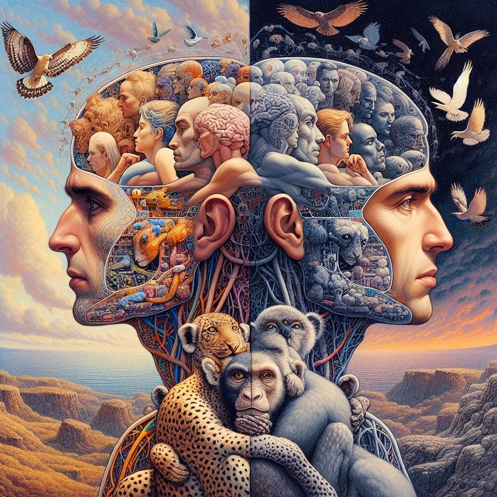

What we consider today as characteristically “human” thought and consciousness may just be a valley in a large attractor basin of all possible minds.
If there’s an alien civilization out there, they may not think that differently from us. Likewise, “human-level” and superhuman AIs in the future may end up seeming more “human” than we currently imagine them to be. Instead of being Lovecraftian horrors as we see them on movies, they’ll probably just have the same philosophical questions, the same moral dilemmas, and perhaps even the same worries as us.
There are two shards of evidence that led me to this idea, the first is an empirical observation while the second is more theoretical:
1. At scale, different kinds of minds are practically just the same
In the field of Machine Learning (colloquially equated with Artificial Intelligence), we have what we call “model architectures”—think of them as “brain structures” but for AIs. And the strange thing is pretty much every big-enough model architecture trained on the same dataset for an equally long time converges to the same mapping. They generate almost the same text, images, “hallucinations”, probability distributions, etc.
Think of it like this: if our pets have large-enough brains relative to their body size, their thoughts would not be that different from ours. We’d be able to communicate with them with little to no friction. Now apply this logic to AIs and aliens…
But why is this so?
2. Local minima are rare in higher dimensions
Biological minds tend to minimize energy consumption. This is because if an animal’s brain consumes more energy than it needs, then that animal would need to hunt more or be in the open to forage more food just to continue thinking—this puts them in more risky situations and thus more chances of dying.
Likewise, we train artificial minds to minimize what we call “loss function”, which we can interpret as a form of energy. For example, the mean-squared error in linear regression is equivalent to the potential energy of the corresponding stick-and-springs model. I’ll discuss more about this in a future article.
The thing is: at higher dimensions, these energy landscapes usually only have a unique, large attractor basin. That, or multiple attractor basins with zero-cost bridges between them.
This is because, for a point to be a local minimum in an energy landscape, all eigenvalues of the hessian (a higher dimensional analogue of the second derivative) at that point has to be positive. And the more dimensions you have, the less likely it is for all of the eigenvalues to be positive. Thus, at scale, it’s very unlikely to get trapped in a local minimum.
My point here is that we’re likely not as special as we think we are. What we consider as “uniquely human” today may not be so when artificial general intelligences come along. Heck, if aliens ever find us, they’d probably think we’re just a younger version of them unlucky enough to ascend to consciousness a bit later.
In the next article, I’ll write about geometric and physical interpretations of the building blocks of machine learning. If you don’t want to miss it, subscribe now!